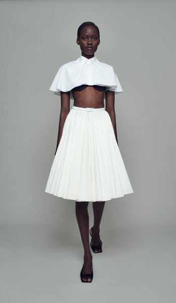
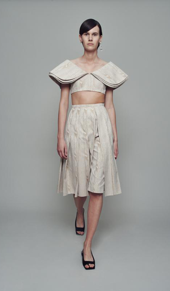
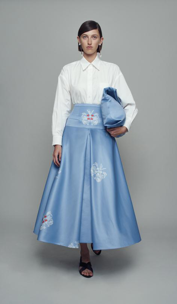
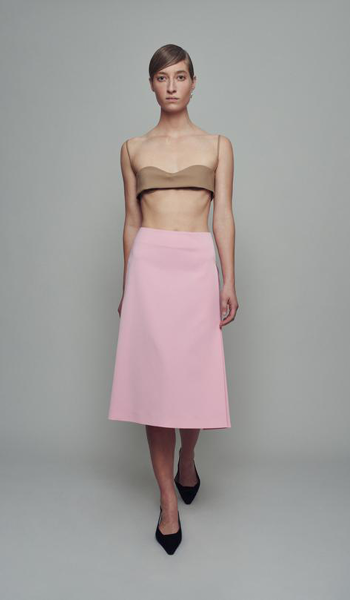

HISTORIA
Emilia Wickstead nació en junio de 1983 en Nueva Zelanda pero se crió principalmente en Milán con su madre, Angela Wickstead, quien también era diseñadora de moda.
Por otra parte sus estudios se ubicaron en Londres, concretamente en la escuela de arte Central Saint Martins, donde estudió diseño de moda con marketing. Además, concluyó su formación realizando las prácticas en Nueva York, concretamente trabajando en los estudios de Proenza Schouler, Narciso Rodriguez, Vogue y Giorgio Armani, integrándose así en la dinámica de trabajo a la que aplicaba.
Abrió su primer negocio a la edad de 24, convirtiendo su apartamento en un pequeño atelier donde confeccionaba prendas a medida. Más adelante, cuando ya tenía tienda propia, tuvo la oportunidad de crear un vestido para Samantha Cameron, la esposa del primer ministro británico, consiguiendo así un mayor reconocimiento en el campo. En 2012 tuvo su primera presentación en la London Fashion Week y actualmente realiza desfiles internacionalmente y es reconocida en numerosas revistas de moda.
INFLUENCIAS
Emilia ha mencionado en numerosas entrevistas que sus mayores referentes a la hora de diseñar son dos generaciones de mujeres de su familia: su madre (que trabajaba como diseñadora de moda en Nueva Zelanda) y su abuela. Considera que con su buen gusto, le enseñaron el valor de vestir bien, factor que vertirá en sus diseños. En un término genérico recalca que las mujeres que le rodean son su principal fuente de inspiración, ya que cada una con su propia historia crea una manera única de llevar sus prendas.
A nivel estético se inspira en las prendas clásicas, variándolas de tal forma que consigue crear siluetas modernas, pulidas y con un fuerte uso de colores planos.






COLECCIÓN PRIMAVERA-VERANO 2020


PREMIOS